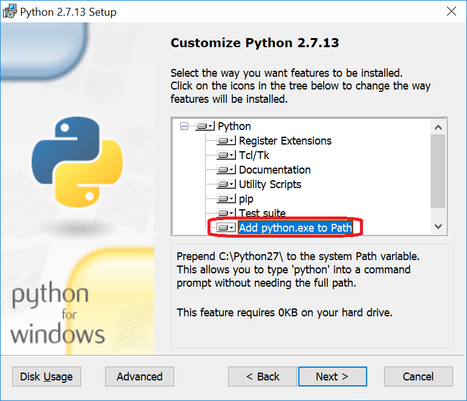
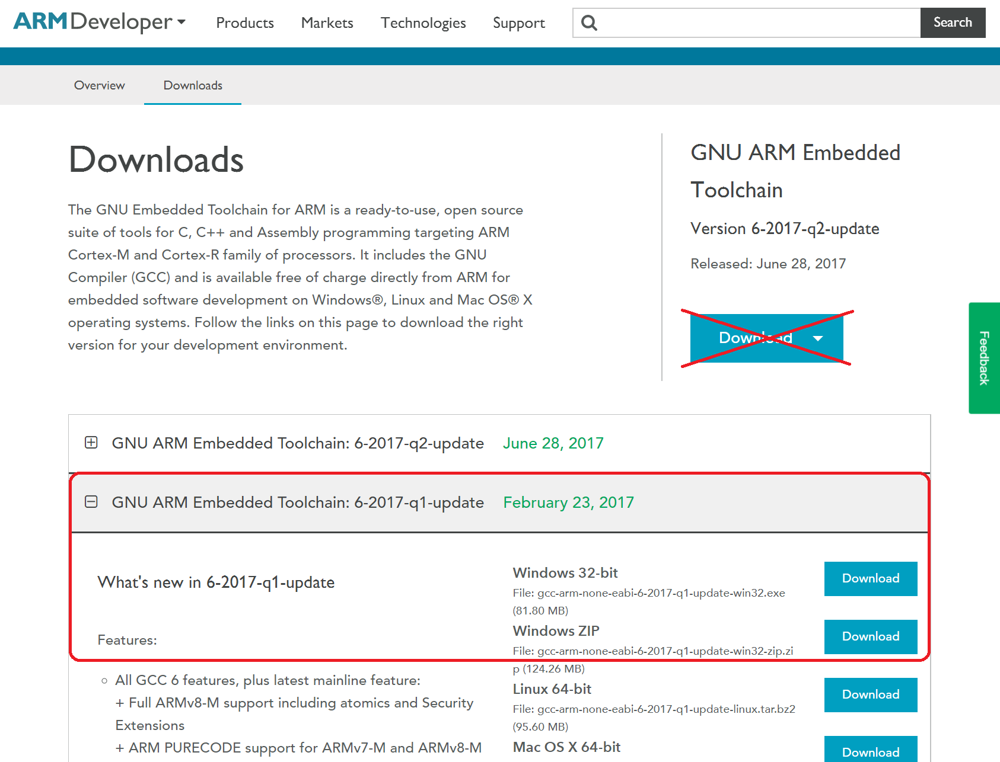
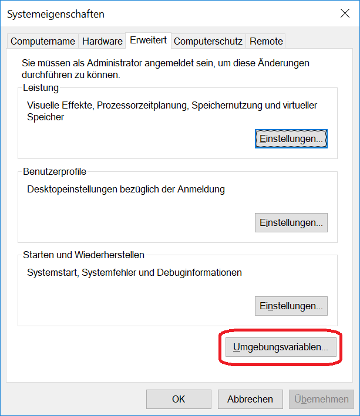
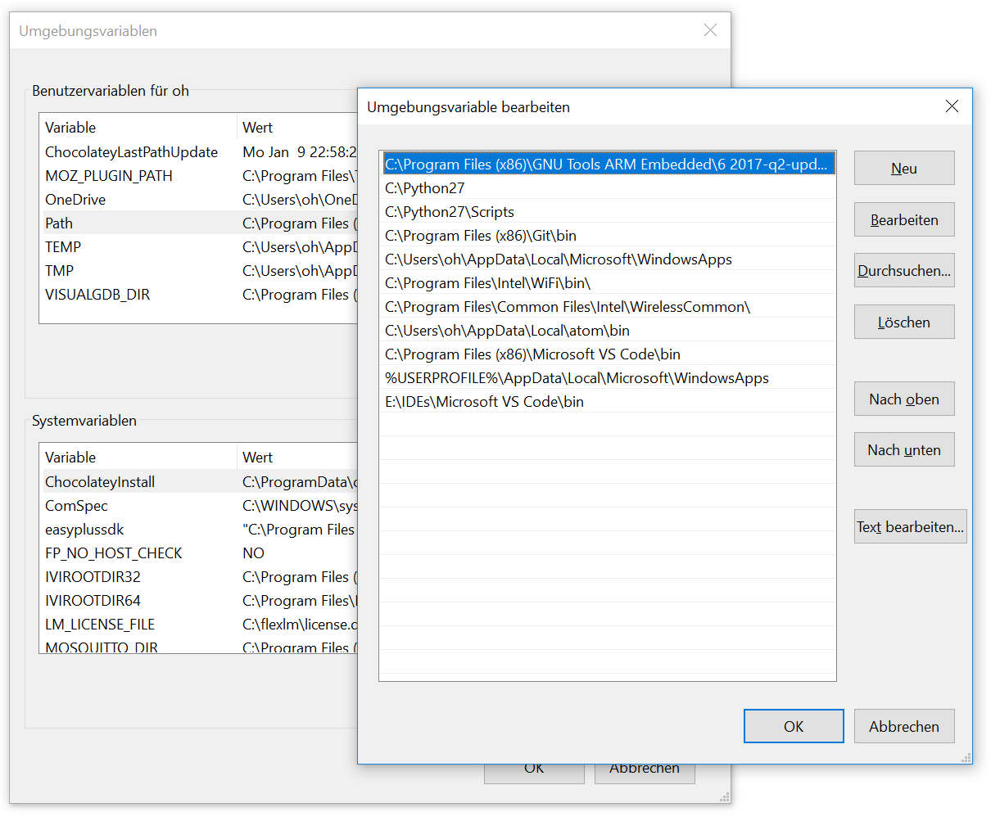

2.1. Installation prerequisites
The mbed_target needs some tools to work properly:
2.1.1. Python
mbed_target uses the internal mbed tools, a collection of Python scripts.
Please install version 2.7.13 of Python: https://www.python.org/downloads/release/python-2713/ A newer 2.7.x version may be possible but is not yet tested. It is not compatible with Python 3!
During the installation it is necessary to choose the option Add python.exe to Path
{kind=link}
That can also be done later through adding the installation folder to the path environment variable. Please see the procedure in the next chapter.
To check the correct installation please call:
E:\git\mbed_target\doc>where python
C:\Python27\python.exe
E:\git\mbed_target\doc>python -V
Python 2.7.13
2.1.2. GNU ARM Embedded Toolchain
The code generation and building process incorporates the gcc_arm toolchain. Because the currently included mbed os version 5.5 is tested with GCC 6 (6-2017-q1-update) this version should be preferred.
You can find it here: https://developer.arm.com/open-source/gnu-toolchain/gnu-rm/downloads
{kind=link}
The gcc tools needs to be in the Windows Path: Open the system properties dialog and press the button environment variables.
{kind=link}
Check the user variable Path if the gcc path is contained. When not add it.
{kind=link}
To check the correct installation please call:
E:\git\mbed_target\doc>where arm-none-eabi-gcc
E:\IDEs\GNUToolsARMEmbedded\6_2017q1\bin\arm-none-eabi-gcc.exe
E:\git\mbed_target\doc>arm-none-eabi-gcc -v
Using built-in specs.
COLLECT_GCC=arm-none-eabi-gcc
COLLECT_LTO_WRAPPER=e:/ides/gnutoolsarmembedded/6_2017q1/bin/../lib/gcc/arm-none-eabi/6.3.1/lto-wrapper.exe
Target: arm-none-eabi
Configured with: /tmp/jenkins-GCC-6-buildandreg-104_20170216_1487268972/src/gcc/configure --build=x86_64-linux-gnu --host=i686-w64-mingw32 --target=arm-none-eabi --prefix=/tmp/jenkins-GCC-6-buildandreg-104_20170216_1487268972/install-mingw --libexecdir=/tmp/jenkins-GCC-6-buildandreg-104_20170216_1487268972/install-mingw/lib --infodir=/tmp/jenkins-GCC-6-buildandreg-104_20170216_1487268972/install-mingw/share/doc/gcc-arm-none-eabi/info --mandir=/tmp/jenkins-GCC-6-buildandreg-104_20170216_1487268972/install-mingw/share/doc/gcc-arm-none-eabi/man --htmldir=/tmp/jenkins-GCC-6-buildandreg-104_20170216_1487268972/install-mingw/share/doc/gcc-arm-none-eabi/html --pdfdir=/tmp/jenkins-GCC-6-buildandreg-104_20170216_1487268972/install-mingw/share/doc/gcc-arm-none-eabi/pdf --enable-languages=c,c++ --enable-mingw-wildcard --disable-decimal-float --disable-libffi --disable-libgomp --disable-libmudflap --disable-libquadmath --disable-libssp --disable-libstdcxx-pch --disable-nls --disable-shared --disable-threads --disable-tls --with-gnu-as --with-gnu-ld --with-headers=yes --with-newlib --with-python-dir=share/gcc-arm-none-eabi --with-sysroot=/tmp/jenkins-GCC-6-buildandreg-104_20170216_1487268972/install-mingw/arm-none-eabi --with-libiconv-prefix=/tmp/jenkins-GCC-6-buildandreg-104_20170216_1487268972/build-mingw/host-libs/usr --with-gmp=/tmp/jenkins-GCC-6-buildandreg-104_20170216_1487268972/build-mingw/host-libs/usr --with-mpfr=/tmp/jenkins-GCC-6-buildandreg-104_20170216_1487268972/build-mingw/host-libs/usr --with-mpc=/tmp/jenkins-GCC-6-buildandreg-104_20170216_1487268972/build-mingw/host-libs/usr --with-isl=/tmp/jenkins-GCC-6-buildandreg-104_20170216_1487268972/build-mingw/host-libs/usr --with-libelf=/tmp/jenkins-GCC-6-buildandreg-104_20170216_1487268972/build-mingw/host-libs/usr --with-host-libstdcxx='-static-libgcc -Wl,-Bstatic,-lstdc++,-Bdynamic -lm' --with-pkgversion='GNU Tools for ARM Embedded Processors 6-2017-q1-update' --with-multilib-list=rmprofile
Thread model: single
gcc version 6.3.1 20170215 (release) [ARM/embedded-6-branch revision 245512] (GNU Tools for ARM Embedded Processors 6-2017-q1-update)
2.1.3. Further necessary tools: mbed-cli and mbed-ls
They can be installed manually with pip, the Python package management system:
C:\mbed_target>pip install mbed-cli
and
C:\mbed_target>pip install mbed-ls
The installation of both tools is also integrated into the Matlab mbed_target setup.
2.1.4. Alternative procedure
There exists an mbed CLI for Windows Installer under https://docs.mbed.com/docs/mbed-os-handbook/en/latest/dev_tools/cli_install/.
This setup installs all tools except for mbed-ls but additionally the not yet needed source code management systems git and mercurial.
This installer may easy the installation but please be aware that it does not contain everything.